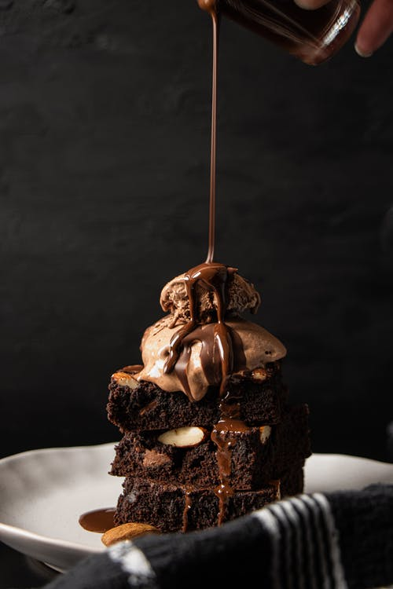

Brownies
Nutrition Facts
Per Serving: 183 calories; protein 1.8g; carbohydrates 25.7g; fat 9g; cholesterol 44.2mg; sodium 109.7mg.
Ingredients (16 Servings)
- 1/2 cup butter
- 1 cup white sugar
- 2 eggs
- 1 teaspoon vanilla extract
- 1/3 cup unsweetened cocoa powder
- 1/2cup all-purpose flour
- 1/4 teaspoon salt
- 1/4 teaspoon baking powder
Frosting
- 3 tablespoons butter, softened
- 3 tablespoons unsweetened cocoa powder
- 1 tablespoon honey
- 1 teaspoon vanilla extract
- 1 cup confectioners' sugar
Steps:
-
Preheat oven to 350 degrees F (175 degrees C). Grease and flour an 8-inch square pan.
-
In a large saucepan, melt 1/2 cup butter. Remove from heat, and stir in sugar, eggs, and 1 teaspoon vanilla. Beat in 1/3 cup cocoa, 1/2 cup flour, salt, and baking powder. Spread batter into prepared pan.
-
Bake in preheated oven for 25 to 30 minutes. Do not overcook.
-
To Make Frosting: Combine 3 tablespoons softened butter, 3 tablespoons cocoa, honey, 1 teaspoon vanilla extract, and 1 cup confectioners' sugar. Stir until smooth. Frost brownies while they are still warm.